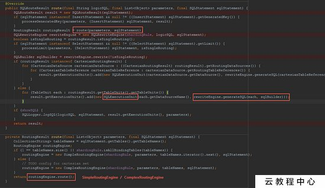
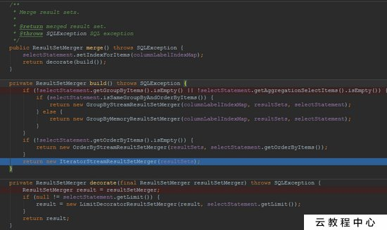

背景关系型数据库在大于一定数据量的情况下性能会急剧下降。在面对互联网海量数据的情况时,所有数据都存于一张表,显然很容易会达到数据表可承受的数据量阈值。单纯分表虽然可以解决数据量过大导致检索变慢的问题,但无法解决高并发情况下访问同一个库,导致数据库响应变慢的问题。所以通常水平拆分都至少要采用分库的方式,以一并解决大数据量&;高并发的问题。但分表也有不可替代的…
1. 背景
关系型数据库在大于一定数据量的情况下性能会急剧下降。在面对互联网海量数据的情况时,所有数据都存于一张表,显然很容易会达到数据表可承受的数据量阈值。
单纯分表虽然可以解决数据量过大导致检索变慢的问题,但无法解决高并发情况下访问同一个库,导致数据库响应变慢的问题。所以通常水平拆分都至少要采用分库的方式,以一并解决大数据量&;高并发的问题。
但分表也有不可替代的场景。最常见的分表需求是事务问题。同一个库则不需要考虑分布式事务问题,善于使用同库不同表可有效的避免分布式事务带来的麻烦。目前,强一致性的分布式事务由于性能问题,导致使用起来性能并不一定会比不分库分表快,因此采用最终一致性的分布式事务居多。
2. 分库分表
分库分表用于应对当前互联网常见的两个场景:大数据量 &; 高并发。通常分为:垂直拆分 &; 水平拆分。 垂直拆分是根据业务将一个库(表)拆分为多个库(表)。如:将经常和不经常访问的字段拆分至不同的库(表)中,与业务关系密切。 水平拆分是根据分片算法将一个库(表)拆分为多个库(表)。
3. Sharding-JDBC
Sharding-JDBC是当当应用框架ddframe中,从关系型数据库模块dd-rdb中分离出来的数据库水平分片框架,是继dubbox、elastic-job之后ddframe开源的第三个项目。
Sharding-JDBC直接分装jdbc协议,可理解为增强版的JDBC驱动,旧代码迁移成本几乎为零,定位为轻量级java框架,使用客户端直连数据库,以jar包形式提供服务,无proxy层。
主要包括以下特点:
- 可适用于任何基于java的ORM框架,如:JPA、Hibernate、Mybatis、Spring JDBC Template,或直接使用JDBC
- 可基于任何第三方的数据库连接池,如:DBCP、C3P0、Durid等
- 理论上可支持任意实现JDBC规范的数据库。目前仅支持mysql
- 分片策略灵活,可支持等号、between、in等多维度分片,也可支持多分片键。
- SQL解析功能完善,支持聚合、分组、排序、limit、or等查询,并支持Binding Table以及笛卡尔积表查询。
- 性能高,单库查询QPS为原生JDBC的99.8%,双库查询QPS比单库增加94%。
架构
核心概念
- LogicTable:数据分片的逻辑表,对于水平拆分的数据库(表)来说,是同一类表的总称。如:订单数据根据主键尾数拆分为10张表,分表是t order 0到t order 9,他们的逻辑表名为t_order。
- ActualTable:分片数据中真实存在的物理表。
- DataNode:数据分片的最小单元,由数据源名称和数据表组成。如:ds 1.t order_0。
- DynamicTable:逻辑表和物理表不一定需要在配置规则中静态配置。如,按照日期分片的场景,物理表的名称随着时间的推移会产生变化。
- BindingTable:指在任何场景下分片规则均一致的主表和子表。例:订单表和订单项表,均按照订单ID分片,则此两张表互为BindingTable关系。BindingTable关系的多表关联查询不会出现笛卡尔积关联,查询效率将大大提升。
- ShardingColumn:分片字段用于将数据库(表)水平拆分的字段。
- ShardingAlgorithm:分片算法。
- SQL Hint:对于分片字段非SQL决定,而由其他外置条件决定的场景,可使用SQL Hint灵活的注入分片字段。
数据源分布规则配置
1 | private Map<String, DataSource> createDataSourceMap(List<Database> dbs) { |
逻辑表&;物理表映射
1 | TableRule orderTableRule =TableRule.builder("order").actualTables(Arrays.asList("t_order_0", "t_order_1")).dataSourceRule(dataSourceRule).build(); |
分片策略配置
Sharding-jdbc认为对于分片策略有两种维度:
- 数据源分片策略(DatabaseShardingStrategy) 数据被分配的目标数据源。
- 表分片策略(TableShardingStrategy) 数据被分配的目标表,该目标表在该数据对应的目标数据源内。
1 | DatabaseShardingStrategy databaseShardingStrategy = new DatabaseShardingStrategy("user_id", new ModuloDatabaseShardingAlgorithm()); |
JDBC规范重写
针对DataSource、Connection、Statement、PreparedStatement和ResultSet五个核心接口封装。
- DataSource:ShardingDataSource
- Connetion:ShardingConnection ShardingConnection是一种逻辑上的分布式数据库链接,成员变量ShardingContext,即数据源运行的上下文信息。
- ShardingContext包括:ShardingRule:分片规则;ExecutorEngine:执行引擎,通过多线程的方式并行执行SQL。
- Statement:ShardingStatement
- PreparedStatement:ShardingPreparedStatement
- ResultSet:ShardingResultSet
SQL解析
常见的SQL解析主要有:fdb/jsqlparser、Druid;sharding-jdbc 1.5.0.M1将SQL解析引擎从Druid换成了自研的解析引擎。 Sharding-jdbc支持join、aggregation、order by、group by、limit、or;目前不支持union、部分子查询、函数内分片等不太应在分片场景中出现的SQL解析。
SQL解析引擎在sharding-jdbc-core模块下com.dangdang.ddframe.rdb.sharding.parsing包下,包含两个组件:
- Lexer:词法解析器
- Parser:SQL解析器
Lexer词法解析器
关键类:LexerEngine、Lexer、Token、Tokenizer Lexer原理:顺序解析SQL,将字符串拆成N个Token。
通过Lexer#nextToken方法不断解析出Token Token结构(以select为例):
SQL解析(以Select为例)
关键类:SQLParsingEngine、AbstractSelectParser(MySQLSelectParser)、SelectStatement、ExpressionClauseParser(parse(SQLStatement))
SQLParseEngine:SQL解析引擎,parse()方法为SQL解析的入口。 - AbstractSelectParser(MySQLSelectParser):SQL解析器,和词法解析器Lexer类似,不同数据库有不同的实现。 - ExpressionClauseParser:解析SQLStatement。
SQL路由&;改写
入口:ShardingPreparedStatement.route - 关键类:ShardingPreparedStatement、PreparedStatementRoutingEngine、ParsingSQLRouter、SimpleRoutingEngine 、ComplexRoutingEngine 、SQLRewriteEngine、

SQL执行 &; 归并
入口:ShardingPreparedStatement.executeQuery 关键类:ShardingPreparedStatement、PreparedStatementExecutor、ExecutorEngine
入口:ShardingPreparedStatement.executeQuery 关键类:ShardingPreparedStatement、ShardingResultSet、MergeEngine

读写分离1
2
3
4
5
6
7
8
9
10
11
12
13
14
15
16
17
18
19
20
21
22<rdb:master-slave-data-source id="db_cluster0" master-data-source-ref="db0" slave-data-sources-ref="db0_slave1, db0_slave0" />
<rdb:master-slave-data-source id="db_cluster1" master-data-source-ref="db1" slave-data-sources-ref="db1_slave0, db1_slave1" />
<rdb:strategy id="databaseStrategy" sharding-columns="user_id" algorithm-class="com.bing.shardingjdbc.spring.algorithm.ModuloDatabaseShardingAlgorithm" />
<rdb:strategy id="orderTableStrategy" sharding-columns="order_id" algorithm-expression="t_order_${order_id.longValue() % 2}" />
<rdb:strategy id="orderItemTableStrategy" sharding-columns="order_id" algorithm-class="com.bing.shardingjdbc.spring.algorithm.ModuloTableShardingAlgorithm" />
<rdb:data-source id="shardingDataSource">
<rdb:sharding-rule data-sources="db_cluster0, db_cluster1" key-generator-class="com.dangdang.ddframe.rdb.sharding.keygen.DefaultKeyGenerator">
<rdb:table-rules>
<rdb:table-rule logic-table="order" actual-tables="t_order_${0..1}" database-strategy="databaseStrategy" table-strategy="orderTableStrategy">
<rdb:generate-key-column column-name="order_id" />
</rdb:table-rule>
<rdb:table-rule logic-table="order_item" actual-tables="t_order_item_${0..1}" database-strategy="databaseStrategy" table-strategy="orderItemTableStrategy">
<rdb:generate-key-column column-name="item_id" />
</rdb:table-rule>
</rdb:table-rules>
</rdb:sharding-rule>
<rdb:props>
<prop key="metrics.enable">true</prop>
<prop key="sql.show">true</prop>
</rdb:props>
</rdb:data-source>
关键类:MasterSlaveDataSourceFactory、MasterSlaveDataSource、 MasterSlaveLoadBalanceStrategy(负载均衡策略,包括Random &; RoundRobin)、
默认主从负载均衡策略:轮询RoundRobinMasterSlaveLoadBalanceStrategy
分布式主键
- Twitter snowflake
1位符号位,始终为0;
41位时间戳,一般实现上不会存储当前的时间戳,而是时间戳的差值(当前时间-固定的开始时间),这样可以使产生的id从更小值开始;41位时间戳可以使用69年,1L<<41/(1000L 60 60 24 365) = 69年
10位节点位,前五位数据中心标识,后五位机器标识,可以部署1024个节点
12位序列号,支持同一个节点同一毫秒可以生成4069个ID
Sharding-JDBC :1bit符号位(为0),41bit时间位,10bit工作进程位,12bit序列位。
spring 配置:
- Flicker
利用MySQL的auto increment、replace into、MyISAM,生成一个64位的ID。 - 先创建一个单独的数据库:如global id - 创建表:
1 | CREATE TABLE global_id_64 ( |
应用端在一个事务里提交:
1 | REPLACE INTO Tickets64 (stub) VALUES ('a'); |
解决单点问题:启用两台数据库服务器,通过区分auto_increment的起始值和步长来生成奇偶数的ID:
1 | Server1: |
应用端轮询取id
柔性事务——最大努力送达型
Sharding-JDBC最大努力送达型事务认为对该数据库的操作最终一定可以成功,因此通过最大努力反复尝试送达操作。
事务日志存储器
基于内存:
1
SoftTransactionConfiguration.setStorageType(TransactionLogDataSourceType.MEMORY);
基于RDB:
1
SoftTransactionConfiguration.setTransactionLogDataSource(txLogDataSource);
默认的storageType 为 RDB。
异步作业
内嵌异步作业:
// 使用内嵌异步作业,仅用于开发环境
// 内嵌了一个注册中心,默认zookeeperPort 41811
2NestedBestEffortsDeliveryJobConfiguration nestedJobConfig = new NestedBestEffortsDeliveryJobConfiguration();
txConfig.setBestEffortsDeliveryJobConfiguration(Optional.of(nestedJobConfig));
独立部署作业
事务日志库
用于异步作业的zk
下载sharding-jdbc-transaction-async-job,通过start.sh脚本启动异步作业: